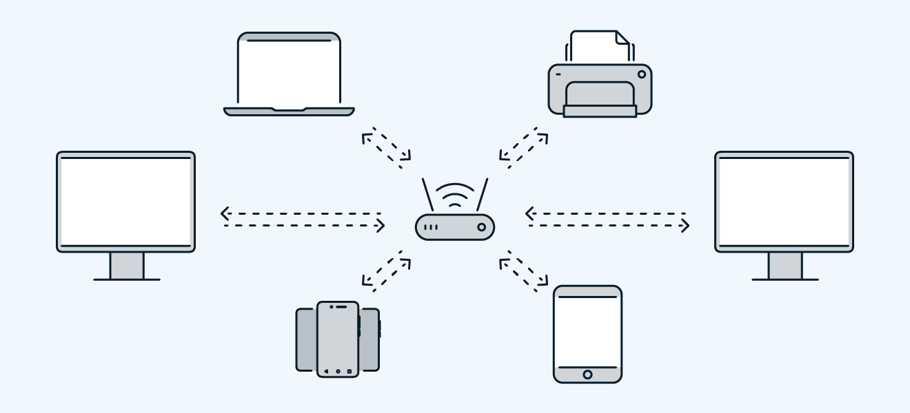

Redes e Internet
Descubra como os dispositivos se conectam, comunicam e partilham informações através das redes informáticas.
Explorar equipamentos →O que é uma rede informática?
Uma rede informática permite ligar vários computadores e dispositivos para partilhar informações, ficheiros e recursos entre si. Estas redes são utilizadas em casas, escolas, empresas e organizações.
O que é a Internet?
A Internet é uma rede mundial que liga milhões de dispositivos, permitindo comunicar, pesquisar informações, estudar e utilizar diferentes serviços online.

Tipos de ligação
Wi-Fi
O Wi-Fi permite ligar dispositivos à rede sem utilizar cabos. É muito utilizado em casas, escolas e empresas.
Ethernet
A ligação Ethernet utiliza cabos de rede para conectar dispositivos, sendo bastante utilizada em redes locais.
Conheça os equipamentos de rede
Explore os principais equipamentos utilizados para construir e gerir redes informáticas.
Ver equipamentos →